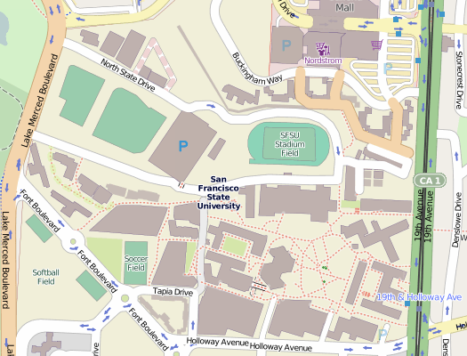

Teaching mapping to geographers
Why talk specifically about teaching OSM to Geographers?
And who are these geographers, anyway?
GIS, remote sensing, surveying, cartography, & most often with undergraduates: none of the above
How do you explain OSM to geographers?
Hands-on Experience: Our Approach
Start with a place we we all know
No fancy editing tools
Ask them to ground truth
Introduce them to the community
Encourage them to go further
Dog-food the data!
Results
stats, etc.

Student reactions
"So far the only difficulties I have experienced is the limitations of the id edit tools. They are perfectly fine for the task of mapping points. For the paths, I found myself accidentally deleting entire paths. I was finally able to figure out how to split the paths and correct an area near the library. As I mentioned I have been mapping and digitizing using ArcMap for quite sometime."
"I didn’t have any difficulties using OpenStreetMap it is fairly simple to use. The digitizing is easy to do OpenStreetMap, I have done it in ArcGIS before."
"I have worked in Arc GIS for few years, and I realized that digitizing in OSM and in ArcMap are quite similar. One important thing that OSM misses is the 'delete last point' option which is very critical in digitizing."
Thank you! @mizmay @mappingmashups
Presentation made with Big